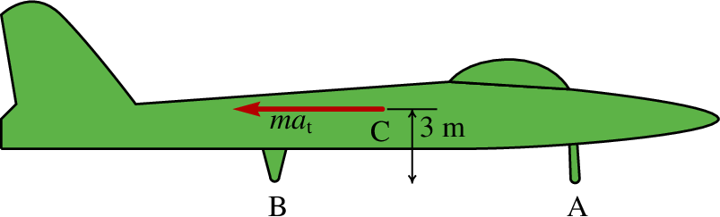
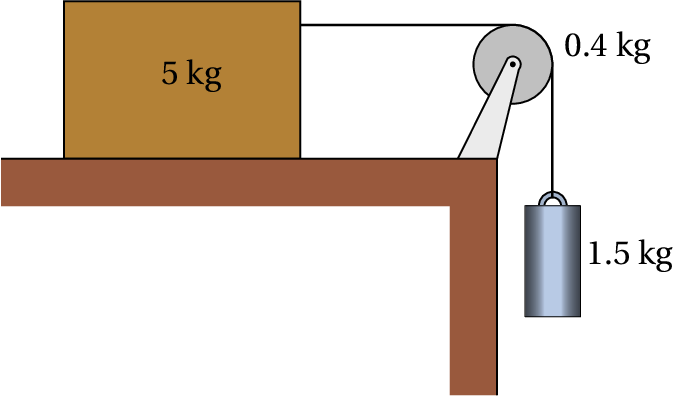

O martelo na figura apoia-se sobre um bloco de madeira de 40 mm de espessura, para facilitar a extração do prego. Sabendo que é necessária uma força de 200 N (perpendicular ao martelo) para extrair o prego, calcule a força sobre o prego e a reação no ponto A. Admita que o peso do martelo pode ser desprezado e em A existe suficiente atrito para evitar que o martelo escorregue.
Para extrair o prego sem dobrá-lo, o martelo é usado para produzir uma força sobre o prego, que aponta para cima. A reação dessa força é a força que o prego exerce sobre o martelo, que tem o mesmo módulo , mas aponta para baixo, como se mostra no diagrama de corpo livre do martelo ao lado. O peso do martelo foi ignorado e a força de reação no ponto A foi dividida nas suas componentes e para facilitar os cálculos.
Se o prego é extraído lentamente e com velocidade uniforme, as acelerações tangencial e normal do martelo são ambas nulas e, como tal, o martelo é um sistema em equilíbrio. Assim sendo, a soma dos momentos das forças externas, em relação a qualquer ponto, é nula. Em relação ao ponto A, unicamente as forças de 200 N e produzem momento e tem-se que
A soma das componentes horizontais das forças deve ser nula
E a soma das componentes verticais também
Um tronco uniforme tem forma cilíndrica com 48 cm de diâmetro, 3 m de comprimento, massa de 100 kg e está pendurado em posição horizontal, por meio de dois cabos de 2 m, como mostra a figura. O tronco larga-se a partir do repouso na posição em que cada cabo faz um ângulo de 60° com a horizontal. Determine a tensão e a aceleração angular de cada um dos cabos, no preciso instante em que o tronco é largado a partir do repouso.

A figura mostra o diagrama de corpo livre do tronco, onde e são as tensões nos dois cabos e o centro de massa encontra-se no centro do tronco. Como o tronco permanece sempre em posição horizontal, a sua velocidade angular é nula; o movimento do tronco é então translação sem rotação, em que as trajetórias de todos os pontos do tronco são arcos de círculo perpendiculares aos dois cabos.
É conveniente usar o sistema de eixos tangencial e normal indicados no diagrama, com a origem no centro de massa. As equações para este sistema são 3: a soma das componentes tangenciais das forças externas é igual à massa vezes a aceleração tangencial, a soma das componentes normais das forças é igual à massa vezes a aceleração normal, que no instante inicial é zero, porque a velocidade inicial é nula e a soma dos momentos das forças externas em relação à origem (centro de massa) é zero. As duas primeiras equações são então
E a soma dos momentos em relação à origem é
A solução destas 3 equações é a seguinte
Os extremos dos dois cabos, nos pontos A e B, têm a mesma aceleração tangencial do tronco, igual a 4.9 m/s2. Assim sendo, a aceleração angular dos cabos é igual a essa aceleração tangencial, dividida pelo comprimento dos cabos (2 m), ou seja
A massa do reboque na figura é 750 kg e está ligado no ponto P a uma trela de um automóvel. A estrada é horizontal e os dois pneus idênticos podem ser considerados como um só, com uma única reação normal e força de atrito desprezável; a resistência do ar também será desprezada. (a) Calcule a reação normal nos pneus e a força vertical no ponto P, quando a velocidade for constante. (b) Quando o automóvel estiver a acelerar, com m/s2, a força em P terá componentes horizontal e vertical. Calcule essas componentes e a reação normal nos pneus (o momento de inércia das rodas e o atrito com a estrada são desprezáveis).

(a) A figura mostra o diagrama de corpo livre do reboque. Como a velocidade é constante, o reboque está em equilíbrio. A reacção normal, , pode ser calculada somando os momentos em relação ao ponto P, que deve ser igual a zero
E a força em P, , encontra-se a partir da soma dos momentos em relação ao ponto de contacto entre o pneu e a estrada
(b) A figura ao lado mostra o diagrama de corpo livre do reboque, quando está a acelerar. Como a aceleração é na direcção (horizontal) e o reboque não roda, a soma das componentes das forças deve ser igual a , a soma das componentes (verticais) das forças deve ser nula e a soma dos momentos em relação ao centro de massa deve ser nula:
A solução da segunda e terceira equações conduz aos valores de reação normal e da componete vertical da força em P:
O avião na figura, com massa total de kg, aterra numa pista horizontal. O ponto C representa o centro de gravidade. No instante em que a velocidade é de 210 km/h (para a direita), o piloto liga as turbinas em modo inverso, produzindo a força constante (representada na figura) e após ter precorrido 580 m na pista a velocidade diminui para 70 km/h. Durante esse percurso, as forças de atrito nos pneus e a resistência do ar podem ser ignoradas, em comparação com a força que é muito maior. Calcule a reação normal na roda da frente.

A figura seguinte mostra o diagrama de corpo livre do avião, onde é a reação normal na roda da frente e é a soma das reações normais nas duas rodas traseiras.
Como o movimento do avião é acelerado mas sem rotação, as expressões da soma das componentes horizontais e verticais das forças e da soma dos momentos em relação ao centro de massa são:
Como a força permanece constante, a primeira equação implica que a aceleração também é constante e pode integrar-se a equação que relaciona a aceleração com a velocidade e a posição
O sinal negativo indica que é no sentido oposto à velocidade. Como tal,
Substituindo esse valor na equação da soma dos momentos, pode resolver-se o sistema de duas equações para e . Mas outra forma mais direta de obter consiste em escrever a equação para a soma dos momentos em relação ao ponto B:
Observe-se que a soma dos momentos em relação a um ponto diferente do centro de massa não é nula, mas é igual ao momento da força resultante, colocada no centro de massa, em relação a esse ponto. Ou seja, a equação anterior obteve-se comparando as forças no diagrama de corpo livre com o seguinte sistema equivalente:
Como os dois sistemas de forças são equivalentes, o momento em relação a qualquer ponto, em particular B, tem de ser igual nos dois sistemas.
Um atleta com massa de 91 kg puxa um camião numa estrada horizontal,
com velocidade constante, por meio de uma corda amarrada às suas
costas. A figura mostra as posições relativas do centro de gravidade
do atleta, C, do ponto de apoio do seu pé com o chão, A, e do ponto de
ligação com a corda, B.
(a) Calcule o módulo da tensão na corda. (b) Faça um
diagrama com as forças que julga que poderão estar a atuar no camião.

(a) As forças externas sobre o atleta são o seu peso, de 891.8 N, a tensão na corda, , a reação normal do chão, , e a força de atrito estático no chão, :
A soma dos binários em qualquer ponto deve ser nula. Somando as forças no ponto A, as forças e não produzem nenhum binário e a soma dos binários de do peso e de em A é:
como tal, a tensão na corda é:
(b) As forças sobre o camião são a tensão na corda, o peso total do camião e da sua carga, e as reações normais e forças de atrito nos pneus. A direção e sentido dessas forças está indicado no diagrama seguinte:

O atrito é estático e as forças de atrito apontam na direção oposta ao movimento, porque nenhuma das rodas tem tração. A força da resistência do ar foi desprezada, porque a velocidade deverá ser muito baixa, mas se fosse considerada teria a mesma direção e sentido das forças de atrito.
O cilindro de 1.5 kg na figura desce verticalmente, fazendo acelerar o bloco de 5 kg sobre a mesa horizontal. A roldana pode ser considerada um disco uniforme de massa 0.4 kg. O fio faz rodar a roldana, sem deslizar sobre a sua superfície. O coeficiente de atrito cinético entre o bloco e a mesa é 0.2. Determine o valor da aceleração do bloco e do cilindro, desprezando o atrito no eixo da roldana, a massa do fio e a resistência do ar.
A figura seguinte mostra os diagramas de corpo livre do bloco, da roldana e do cilindro:
Há quatro forças a atuar no bloco: o peso, , a reação normal, , a tensão no fio, , e a força de atrito, . Como não há aceleração na vertical, a soma das forças verticais é nula, ou seja, é igual ao peso, igual a 49 N. Como o atrito é cinético, a força de atrito é igual N e a soma das forças horizontais é
Na roldana atuam 4 forças: o peso, as tensões nos dois lados do fio, e , e uma força no eixo. Se for o raio da roldana, o seu momento de inércia, em relação ao seu eixo, é . Como o fio não desliza sobre a roldana, então a aceleração angular é igual a , onde é a aceleração do bloco e do cilindro. A equação de movimento para a roldana é:
E substituindo a expressão já obtida para a tensão obtém-se,
No cilindro atuam o peso e a tensão no fio e a equação de movimento é:
E substituindo a expressão obtida para a tensão obtém-se,